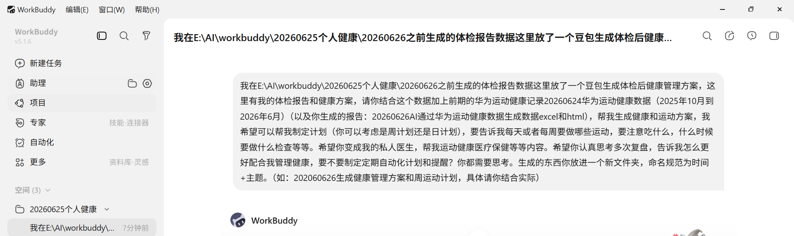
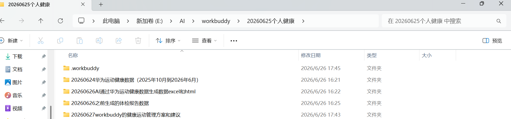

一个 36 岁地中海贫血携带者的真实经历：从"每年体检完就把报告扔一边"，到拥有一整套 AI 生成的健康管理方案、每周运动计划和自动化提醒。
我今年 36 岁，男，171cm，68kg，BMI 正常，看起来不算差。但翻开体检报告，其实有不少"地雷"：
β型地中海贫血（2025年确诊），不能随便补铁，运动也不能太剧烈
胆囊切除术后（2022年），低脂少食多餐、严禁喝酒
HDL胆固醇偏低 0.95 mmol/L（2026年新发），需要规律运动来改善
窦性心动过缓，静息心率只有 50 左右，虽然医生说生理性的，但得留意
还有 AFP 轻度升高、脾稍大、甲状腺囊肿……
每次拿到体检报告，医生都说"暂时先观察，建议规律运动、注意饮食"。但"规律"和"注意"这两个词太虚了——到底每天做什么运动？吃什么东西？什么时候该去复查什么项目？ 没人告诉我。
我戴华为手表快一年了，步数、心率、睡眠数据攒了一大堆，但这些数字和体检报告之间有什么关系？我也不知道。
2026 年 6 月，我开始用 WorkBuddy（一个 AI 智能助手工具）正经地管理这件事。过程和结果让我自己都震惊——三份数据扔进去，出来的是一整套可执行的方案。
很多人以为 AI 要"特殊的"数据，其实不用。就用你已经有的东西：
我用的华为手表，导出数据很简单：
打开华为运动健康 App
个人中心 → 设置 → 隐私管理 → 导出数据
会生成一个文件夹，里面包含每日步数、心率、睡眠、运动记录、跑步能力等详细的 JSON 和 Excel 文件
我导出了 2025 年 10 月到 2026 年 6 月共 8 个月的数据。
其他品牌（Apple Watch、小米、OPPO）也有类似的数据导出功能，原理相同。
近两年的体检报告扫描件或 PDF，如果之前有 AI（比如豆包、ChatGPT）帮你解读过，那份方案也一并扔进去。
我的体检报告里有关键异常：
地中海贫血相关指标
HDL 胆固醇偏低
AFP 轻度升高
脾脏彩超数据
胆囊术后记录
如果你之前也让某个 AI 做过初步分析，把那些结果也一并放进去。AI 不是从零开始的，它会在已有基础上深化。

这是关键。 很多人问 AI 得不到好结果，是因为问得太笼统。
"帮我做个健康计划"
—— AI 只能给你一个泛泛的"多运动、早睡早起"。
我在xxx文件夹放了以下数据：
1. 我的体检报告和豆包生成的健康方案
2. 华为手表导出的8个月运动健康数据
3. AI之前帮我生成的每日数据报表
我的健康状况包括：
- β型地中海贫血（2025确诊）：不能补铁，只能适度运动
- 胆囊切除术后（2022）：低脂少食多餐，禁酒
- HDL偏低 0.95：需要规律有氧运动提升
- 窦性心动过缓：静息心率50左右
- AFP轻度升高、脾稍大
我的偏好：
- 运动时间：晚上7-9点
- 饮食：不太讲究，需要简单可执行的建议
请你：
1. 结合所有数据，生成一份综合健康管理方案
2. 制定每周运动计划（每天做什么、做多久、心率控制多少）
3. 给出每日饮食指导（具体菜谱，不是笼统建议）
4. 列出医疗检查时间表（什么时候查什么项目）
5. 设计自动化提醒方案
6. 思考怎么帮我长期配合管理健康
你要认真思考、多次复盘，像一个真正的私人医生。
为什么这样写有效？
告诉 AI 数据在哪：给它具体的文件路径
告诉 AI 你的病史和限制：地中海贫血不能补铁、胆囊术后不能吃油腻——这些是关键约束条件，AI 必须知道
告诉 AI 你的生活习惯：晚上才有空运动、吃饭不讲究——方案才能落地
把要求拆解成具体任务：不是"做个方案"，而是"整体方案 + 周计划 + 饮食指导 + 检查时间表 + 提醒方案 + 长期配合"
要求它深度思考：加上"多次复盘"、"像私人医生一样"这样的提示，AI 的输出质量会明显提升

AI 先进行了全面的数据分析——它读了我的所有数据文件，自动完成统计分析（日均步数、万步率、睡眠趋势、心率分布等），然后基于分析结果和我提供的病史约束，生成了一整套方案。内容覆盖从"我有什么病、什么数据"到"每天吃什么、怎么运动、什么时候复查"的全链路：
| 章节 | 内容 |
|---|---|
| 身体状况总览 | 5 项疾病梳理 + 5 项异常指标 + 8 个月华为数据关键指标 + 待改善问题优先级 |
| 周运动计划 | 7 天差异化安排（快走/慢跑/核心/间歇/恢复），心率 110-135 bpm 安全区间，含热身/拉伸/核心动作详细说明 |
| 每日饮食指导 | 一日五餐结构 + 工作日/周末菜谱 + 食物红绿灯清单 + 铁剂警示 |
| 医疗检查时间表 | 从 2026 年 7 月起的完整检查时间线（什么时间、查什么、去哪个科室、做什么准备） |
| 日常自我监测 | 9 项每日观察 + 华为手表 7 项监测指标 + 月度自评表 |
| 自动化提醒方案 | 每日/每周/每月/每季度/每半年/每年提醒内容设计 |
| 与医生配合指南 | 数据追踪清单 + 月度摘要模板 + 就医话术模板 + 红色警报清单 |
| 附录 | 关键指标目标值表（3月/6月/1年）、心率分区计算、可打印快速参考卡 |
方案生成了 MD（Markdown）+ HTML 网页两种格式，HTML 版本有完整的可视化设计——数据卡片、进度条、颜色标记的表格，打印出来贴在墙上也很好看。
📍 这篇文章配图中的数据卡片、周运动安排可视化、饮食对照表、检查时间线，全部来自 AI 自动生成的 HTML 文件。
AI 知道我在适应期（第 1 周），自动按"循序渐进"原则安排了 6 月 29 日到 7 月 5 日的每日详细计划：
| 日期 | 运动 | 时长 | 心率 | 要点 |
|---|---|---|---|---|
| 周一 6/29 | 快走+拉伸 | 45min | 105-120 | 热身→快走35min→拉伸 |
| 周二 6/30 | 慢跑 | 40min | 120-135 | 配速6-7分/公里，>145减速 |
| 周三 7/1 | 快走+核心 | 50min | 105-125 | 平板支撑/鸟狗式/仰卧抬腿 |
| 周四 7/2 | 走跑交替 | 40min | 115-135 | 快走3分+慢跑3分×5轮 |
| 周五 7/3 | 快走（轻松日） | 40min | 105-120 | 为周六储备体力 |
| 周六 7/4 | 慢跑（稍长） | 50min | 120-135 | 本周最长距离 |
| 周日 7/5 | 主动恢复 | 35min | 95-110 | 散步+拉伸 |
每天还配了三餐+加餐的推荐菜谱，以及一个7 天自查表（吃早餐、运动完成、观察尿色等），可以直接打印出来每天打勾。
由于我有地中海贫血，方案中特别标注了：严禁自行补铁（铁剂、含铁维生素、动物肝脏/血制品一律禁止）、运动心率不能超过 145 bpm、避免高强度间歇训练。这些是基于我的病史自动生成的专属安全约束。
拿到方案只是第一步，关键是执行。AI 还帮我设计了完整的自动化提醒体系：
07:30 吃早餐提醒
10:30 上午加餐（坚果/水果）
15:30 下午加餐（酸奶/饼干）
18:30 晚餐提醒（少油清淡）
18:45 今晚运动内容提醒
22:30 准备睡觉提醒
7 月 | 尿常规复查
9 月 | 血脂四项（HDL 干预后复查）
12 月 | AFP + 肝功能
每月 1 号 | 健康自评表（运动/饮食/睡眠/精力/情绪打分）
我把这些提醒全部导入了手机的日历 App，设置成重复事件。不需要额外装任何 App，你的手机自带日历就能做到。
你每天戴的手表、每年做的体检，这些数据本身就足够 AI 分析。你不需要额外买什么设备。
第一段：我有这些数据（路径/来源）
第二段：我的健康状况和限制条件（病史、禁忌、偏好）
第三段：我要你做这些事（拆解成 3-6 个具体任务）
照这个框架写，AI 的输出质量会飞跃。
让 AI 同时生成 MD 和 HTML。MD 方便编辑和复制，HTML 就是一份可以直接打印的"健康手册"。我还让 AI 生成了一个"快速参考卡"——一页纸，浓缩了每日必做、绝对禁止、运动心率、复查提醒，可以设成手机壁纸。
我让 AI 思考了"怎么长期配合管理健康"——于是它给出了月度健康摘要模板、就医话术模板、红色警报清单。这些东西让你下次看医生时不再"不知道该怎么说"。
计划做得再好，忘了就是白做。手机日历设置好重复提醒，到点自动弹出来。不需要任何额外的 App。
AI 不知道你最新的血液指标变化，不能诊断。但 AI 可以帮你：
把零散的数据串起来
把医生的"规律运动"转换成"每天几点做什么"
把"注意饮食"变成"周一早餐燕麦粥+周三午餐豆腐"
提醒你什么时候该复查什么项目
最终决策权在你和你的医生手里，AI 只是让你"带着问题去看医生"而不是"不知道问什么"去看医生。
| 工具 | 用途 |
|---|---|
| 华为运动健康 App | 导出运动/睡眠/心率原始数据 |
| 体检报告 PDF/扫描件 | 血液指标、影像结果 |
| 豆包 AI | 初步解读体检报告（可选） |
| WorkBuddy | 核心 AI 工具：数据分析、方案生成、提醒设计 |
| 手机日历 | 设置重复提醒，落地执行 |
以前我每年体检完，报告往抽屉一塞，该吃吃该喝喝。这次花了一个下午，让 AI 帮我把所有数据"消化"了一遍，出来的结果比我预想的靠谱很多——不是那种"少油少盐多运动"的废话，而是**具体到"周一晚上 7 点快走 45 分钟、配速 9 分/公里、心率控制在 110-120"**这种可以直接执行的指令。
身体是最好的资产，管理它不需要你是医学博士，只需要你愿意把已有的数据用好。
如果你也有智能手表和体检报告，不妨试试。
免责声明：本文中的医疗建议为 AI 基于个人数据生成，执行前请咨询主治医生。地中海贫血患者尤其需要注意运动强度和铁摄入。